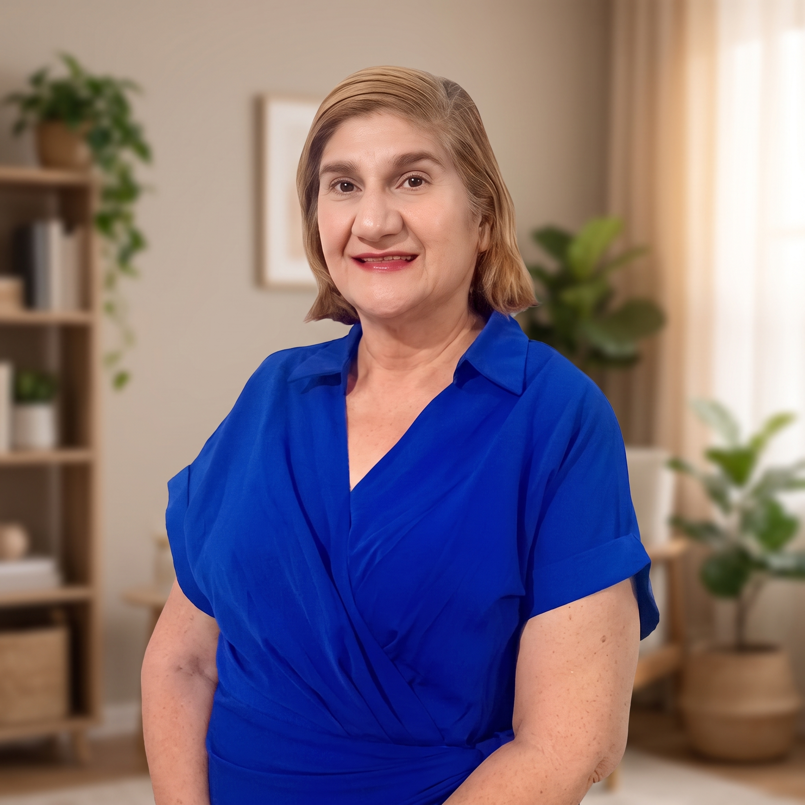

Acompañamiento terapéutico ético, empático y basado en evidencia. Sesiones individuales de 60 minutos diseñadas para ayudarte a superar la ansiedad, el estrés y construir tu mejor versión.

Psicóloga Clínica dedicada al bienestar emocional, el desarrollo cognitivo y la orientación familiar.
Ofrezco un espacio terapéutico ético, empático y profesional adaptado a niños, adolescentes, adultos y parejas. Con más de dos décadas de práctica en consultorio privado, combino mi preparación clínica y de posgrado para brindar una atención integral.
Atención presencial en San Nicolás de los Garza y sesiones en línea
Universidad Autónoma de Nuevo León (UANL)
Universidad Metropolitana de Monterrey (UMM)
Universidad Ciudadana de Nuevo León (UCNL)
San Nicolás de los Garza, N.L.
Atención vía Google Meet / Zoom
Colonia Residencial Las Puentes, San Nicolás de los Garza. Fácil acceso desde Av. Cordillera de los Andes.
La consulta individual (niños, adolescentes y adultos) tiene un costo de $500 MXN por sesión. La terapia de pareja tiene un costo de $700 MXN por sesión.
Cada consulta tiene una duración estimada de 50 a 60 minutos, destinando este tiempo de forma dedicada a tu proceso terapéutico.
Regularmente se sugiere iniciar de manera semanal para dar continuidad al proceso. Sin embargo, podemos adaptar un plan quincenal según tus necesidades, ritmo de avance y posibilidad de agenda.
Ofrezco atención presencial en San Nicolás de los Garza, N.L., así como la opción de videoconsulta en línea para tu comodidad.
Puedes hacer clic en cualquiera de los botones de WhatsApp para consultar los horarios disponibles y agendar tu primera sesión de manera rápida.
Da el primer paso hacia tu bienestar emocional. Puedes enviar un mensaje directo a WhatsApp o llenar el formulario para coordinar un horario.
San Nicolás de los Garza, N.L. | Modalidad En Línea
Lunes a Sábado previa cita